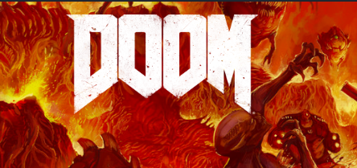
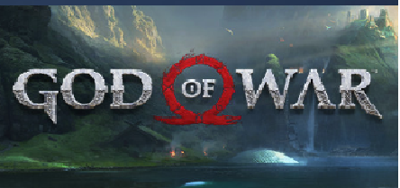
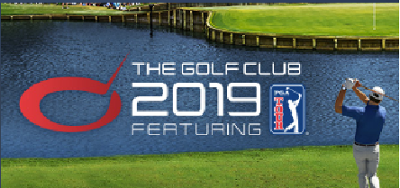
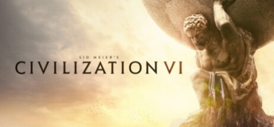
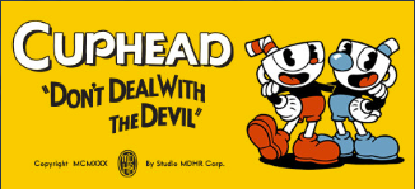

Fichas de juegos disponiblesFallout-3
| categoria | descripcion | juegos | |
|---|---|---|---|
| Accion |  | El género de acción es el más amplio y abarcativo, englobando muchos subgéneros como videojuegos de lucha, videojuegos de disparos en primera persona, beat 'em ups y videojuegos de plataformas. |
|
| Aventura |  | Los videojuegos de aventura son un género de videojuegos, caracterizados por la investigación, exploración, la solución de rompecabezas, la interacción con personajes del videojuego, y un enfoque en el relato en vez de desafíos basados en reflejos. |
|
| Deportes |  | Los juegos deportivos requieren concentración y mucha habilidad, por lo que la forma de superarse es practicar mucho. No suelen ofrecer tramas de fondo ni argumentales y por lo general desembocarán en una socialización mayor que el resto. Jugar contra la máquina no es tan divertido como ganar a nuestros amigos |
|
| Estrategia |  | Rol y juegos de guerra. Consisten en trazar una estrategia para superar al contrincante. Exigen concentración, saber administrar recursos, pensar y definir estrategias.Los juegos de estrategia tienen una curva de aprendizaje. Lo normal será perder las primeras partidas e ir progresando poco a poco. Después de haber superado el aprendizaje, el juego se vuelve más divertido, de forma que es normal engancharse después de una exposición elevada. En un juego de estrategia se puede desarrollar la inteligencia y es realmente complicado dominarlos. |
|
| Arcade |  | Plataformas, laberintos y aventuras. El usuario debe superar pantallas para seguir jugando. Imponen un ritmo rápido y requieren tiempos de reacción mínimos. Esta modalidad de juego es la más inocua, se corresponden en contenido con los pasatiempos de toda la vida. Hacer una sopa de letras no tiene grandes efectos en nuestra vida. Aunque quizá hacer 200 sopas de letras al día sea distinto. Exigen una concentración fuerte pero también es difícil que enganchen a largo plazo. |
|